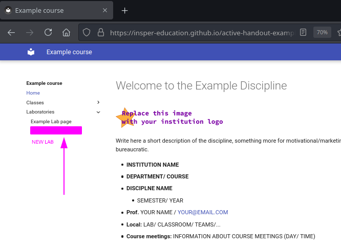
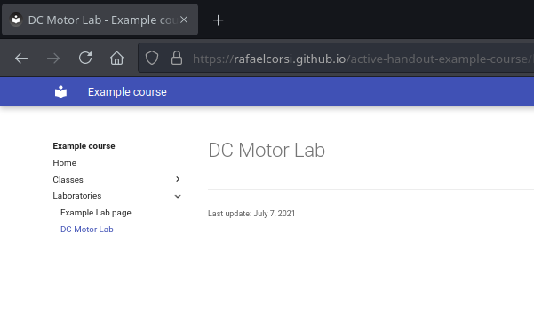
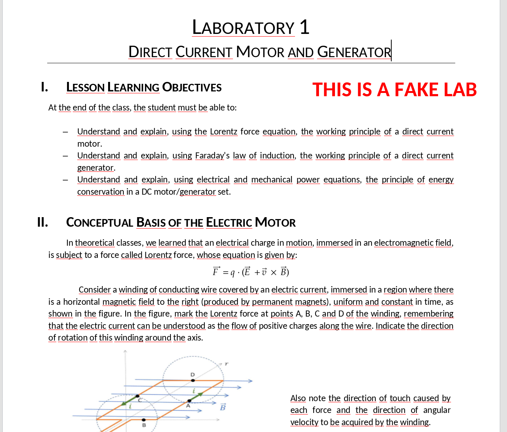
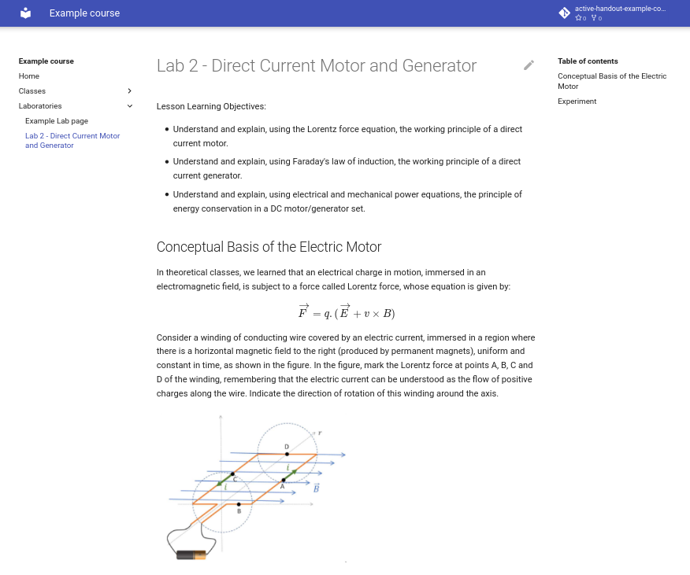

Creating a new handout
Let's create a new laboratory handout on our course page. The following steps represent an overview of this process:
- Create the laboratory folder (
02-DCMotor) andindex.mdfile - Add the new page to the
mkdocs.yml - Add content to the your lab (editing the
index.mdfile)
This new content will appear on the website's outline (on the left).

Info
This script was created based on an example (fake) lab: Direct Current Motor and Generator. If you brought your own materials, feel free to use them in this handout.
You can download the material here
Creating the lab files
In our experience, it helps to organize course material taking into account some "rules":
- Separate
labsandclassesinto different folders - Create a folder for each lab or class
- Number each folder (
ie: 01-ExampleLab). This makes it easier to refer to activities in text and slides. - Each folder holds:
index.md: A markdown file with the class material- Images, presentation and extra material for that specific activity
Question
Name your lab below. The folder name should be related to the title of the lab.
Details
If you are using the provided course materials, it could be something along the lines of 02-DcMotor. We use 02- at the start because the example course already has a first lab.
Task
Enter the lab folder (inside content). Then create a file inside it. The folder 02-DcMotor does not exist yet, so we'll create it together with our file. Follow the video below to create a file and a folder at the same time.
Video
Task
Now you should be in the Edit page. For now, let's just add a title and save the file (using the green Commit changes button at the bottom of the page).
# DC Motor Lab .
Markdown tips
In Markdown titles are lines starting with a single #. The first title appears in the outline on the left.
Progress
Continue
Adding the new page to mkdocs.yml
With our (rather empty) page created, we now need to add it to the outline. We'll use the same method of editing a file online on Github.
Task
Open the edit page for mkdocs.yml, located at the root of your repository.
Task
Find the nav section and add the path to your recently created file. In our case we're using labs/02-DcMotor/index.md, but you should adapt it to the name of the folder created in the previous questions.
nav:
- Home: index.md
- Classes:
- classes/01-ExampleClass/index.md
- Laboratories:
- labs/01-ExampleLab/index.md
+ - labs/02-DcMotor/index.md
Video
After the build and deploy process you should see the new page on your website:

Warning
Remember that the process can take up to one minute.
Editing tips
The steps done earlier may seem complex, but once you get the hang of it, it's not that different from editing local files in Word or PowerPoint. It is also possible to edit files offline locally on your computer without using Github.
Progress
Continue
Adding content
Now we come to the most interesting part of the tutorial: creating the activity that will be shared with the students. This section is based on our fake Physics lab, but any course materials can be used. Our main objective here is creating pretty formatted text, so we are not particularly interested in the contents.
Task
If you are using our fake lab, download and extract it in your PC. If you are not, locate the files you want to use and keep them ready.
Our fake lab contains 5 files, word document with the lab instruction and four images that were extracted from the document.
The image below illustrates the type of document we'll be using, please open the document and analyses the used elements.

We can identify the following elements in this lab:
- Title/ sections/ paragraphs
- Theory (text explanations)
- Lists
- Equations
- Figures
- Code
- Questions
We will learn how to create these elements in Markdown. The end result will be similar to the Figure below. A live version is available at Rafael's example materials. The sources can be seen here

Title, subsection, paragraphs
To type text you can just write on the file. To separate paragraphs use a blank line. For titles, start a line with # and then follow with an empty line. For sections, start a line with ## and then follow again with an empty line. The example below illustrates these features:
# this is a title
paragraph
## a section
another paragraph
### subsection
...
Warning
You can use only one head(#) per document.
Task
Using the word file as reference rewrite copy and past the text as paragraph and create the Head and sections, don't worry about the other elements (list, images, ...) they will be the next tasks.
Lists
Lists in markdown can be made as follows:
- first item
- seccond item
- sub item (note that here we use 4 spaces)
- sub item
If you want an ordered list:
1. first item
1. seccond item
1. sub item (note that here we use 4 spaces)
1. sub item
Task
Port the lesson learning objectives from word to the markdown file using list.
Warning
We suggest that you check the generated site frequently to see if it is in accordance with what you want.
Equations
Equations can be directly written using LaTex math notation. Write some formulas on your text and see the final result online.
If you don't know LaTex notation, you can use the following to test this feature. Put it in a separate paragraph.
$$
\sum_{i=1}N \frac{\Phi(x_i)^2}{i}
$$
Task
Write the Lorentz force equation on the markdown file.
Solution
$$
\overrightarrow{F} = q . (\overrightarrow{E} + v \times B)
$$
Images
Images are included using the following format:

filename.png is the name of the image and should match the name that you used in the Upload step.
Uploading images
You need to upload the images to the lab folder before using. This can been done in github by going to the folder you want to upload to and then clicking Add file  Upload
Upload 
Video
Task
Include the figures on the markdown file.
Solution


Code
Code blocks are started and ended by a line with three backticks. See examples below.
```c
#include <stdio.h>
int main(void) {
printf("Hello world!\n");
return 0;
}
```
Task
Use the code block to include the arduino code on the active page.
Admonitions
You can use extra features to improve the material, we suggest using Admonitions to highlight parts of the text or to warn the student of something. All follow the same syntax:
!!! type "Title"
Text ... ..
Please access the original doc to see the supported types.
Task
Add at least one admonition to the script.
Further references
Markdown is practical, but it has limitations and as we use it we will learn to work around. For ideas see: